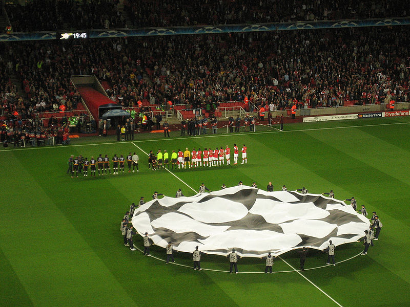

UEFA Champions League

The first pan-European tournament was the Challenge Cup, a competition between clubs in the Austro-Hungarian Empire.
The Mitropa Cup, a competition modeled after the Challenge Cup, was created in 1927, an idea of Austrian Hugo Meisl, and played between Central European clubs.
In 1930, the Coupe des Nations (French: Nations Cup), the first attempt to create a cup for national champion clubs of Europe, was played and organised by Swiss
club Servette. Held in Geneva, it brought together ten champions from across the continent. The tournament was won by Újpest of Hungary. Latin European nations
came together to form the Latin Cup in 1949.
After receiving reports from his journalists over the highly successful Campeonato Sudamericano de Campeones of 1948, Gabriel Hanot, editor of L'Équipe, began
proposing the creation of a continent-wide tournament. After Stan Cullis declared Wolverhampton Wanderers "Champions of the World" following a successful run of
friendlies in the 1950s, in particular a 3–2 friendly victory against Budapest Honvéd, Hanot finally managed to convince UEFA to put into practice such a tournament.
It was conceived in Paris in 1955 as the European Champion Clubs' Cup.
he first edition of the European Cup took place during the 1955–56 season. Sixteen teams participated (some by invitation): Milan (Italy), AGF Aarhus (Denmark),
Anderlecht (Belgium), Djurgården (Sweden), Gwardia Warszawa (Poland), Hibernian (Scotland), Partizan (Yugoslavia), PSV Eindhoven (Netherlands), Rapid Wien (Austria),
Real Madrid (Spain), Rot-Weiss Essen (West Germany), Saarbrücken (Saar), Servette (Switzerland), Sporting CP (Portugal), Stade de Reims (France), and Vörös Lobogó
(Hungary).The first European Cup match took place on 4 September 1955, and ended in a 3–3 draw between Sporting CP and Partizan. The first goal in European Cup history was
scored by João Baptista Martins of Sporting CP. The inaugural final took place at the Parc des Princes between Stade de Reims and Real Madrid. The Spanish squad came
back from behind to win 4–3 thanks to goals from Alfredo Di Stéfano and Marquitos, as well as two goals from Héctor Rial.
Real Madrid successfully defended the trophy next season in their home stadium, the Santiago Bernabéu, against Fiorentina. After a scoreless first half, Real Madrid
scored twice in six minutes to defeat the Italians. In 1958, Milan failed to capitalise after going ahead on the scoreline twice, only for Real Madrid to equalise.
The final, held in Heysel Stadium, went to extra time where Francisco Gento scored the game-winning goal to allow Real Madrid to retain the title for the third
consecutive season. In a rematch of the first final, Real Madrid faced Stade Reims at the Neckarstadion for the 1959 final, and won 2–0. West German side Eintracht
Frankfurt became the first non-Latin team to reach the European Cup final. The 1960 final holds the record for the most goals scored, with Real Madrid beating
Eintracht Frankfurt 7–3 in Hampden Park, courtesy of four goals by Ferenc Puskás and a hat-trick by Alfredo Di Stéfano. This was Real Madrid's fifth consecutive title,
a record that still stands today.